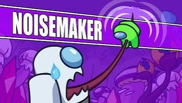

1. Historia, Contexto y Rol Operativo en la Misión
Introducido oficialmente por Innersloth en la trascendental actualización de roles de junio de 2024, el Alertador (denominado en la versión en lengua inglesa como Noisemaker) fue diseñado para solventar uno de los dilemas tácticos más frustrantes para la tripulación: las víctimas solitarias que yacían olvidadas durante minutos enteros en sectores recónditos de la nave (como los túneles de descontaminación de MIRA HQ o los depósitos de especímenes de Polus).
El Alertador porta un transpondedor bioacústico de resonancia armónica sincronizado de manera indivisible con sus constantes neurológicas y cardiopulmonares. Si el usuario sufre una agresión letal que interrumpa su pulso biológico de forma violenta, el mecanismo libera una potentísima señal de socorro electromagnética y acústica que sacude los receptores de radio y los monitores HUD de cada tripulante con vida en la partida.
Esta alerta no es pasiva ni silenciosa: resuena con un timbre estridente inconfundible y proyecta una baliza direccional en la pantalla de los aliados. El agresor, que esperaba una muerte limpia y desapercibida, se encuentra súbitamente con que toda la estación conoce la hora y el lugar exacto de su crimen, forzándolo a una carrera desesperada por ventilar o escapar antes de ser cercado por los testigos que convergen hacia el punto del estruendo.
2. Análisis de Mecánicas, Baliza Visual y Acústica
El funcionamiento del Alertador opera como un seguro de vida póstumo de altísimo impacto disuasorio:
2.1. Alarma de Choque Vital [Automática]
En el instante exacto de su eliminación, detona un pitido de sirena en los altavoces de todos los jugadores de la nave, avisando de una baja inmediata. Esta capacidad ejerce un impacto directo sobre la dinámica de supervivencia en la nave (Activación: Muerte Inmediata), obligando tanto a aliados como a adversarios a recalcular constantemente sus rutas de tránsito y tiempos de reacción.
2.2. Baliza Radial en HUD [Visual en Pantalla]
Dibuja una onda expansiva con una flecha luminosa en el borde de la pantalla de todos los tripulantes vivos, indicando la dirección exacta del crimen. Esta capacidad ejerce un impacto directo sobre la dinámica de supervivencia en la nave (Duración Baliza: 3 a 8 Segundos), obligando tanto a aliados como a adversarios a recalcular constantemente sus rutas de tránsito y tiempos de reacción.
2.3. Disuasión Psicológica [Pasiva Táctica]
Obliga al impostor a dudar antes de atacar en salas sin ventilación cercana, sabiendo que la víctima puede detonar una alarma general instantánea. Esta capacidad ejerce un impacto directo sobre la dinámica de supervivencia en la nave (Impacto: Frena ataques rápidos), obligando tanto a aliados como a adversarios a recalcular constantemente sus rutas de tránsito y tiempos de reacción.
3. Ventajas Estratégicas y Puntos Vulnerables
3.1. Ventajas Operativas y Fortalezas Estratégicas
El despliegue eficiente de este rol aporta ventajas sustanciales que permiten maximizar el control del mapa y acelerar los objetivos del equipo:
- Ventaja táctica: Elimina por completo el retraso temporal en el descubrimiento de cadáveres.
- Ventaja táctica: Permite a los tripulantes cercanos converger de inmediato hacia la escena para atrapar al asesino.
- Ventaja táctica: Atrapa in fraganti a impostores que intentan fingir tareas o esconderse junto al cuerpo.
- Ventaja táctica: No requiere activación manual: funciona automáticamente incluso en emboscadas sorpresa.
3.2. Vulnerabilidades Críticas y Limitaciones Operativas
No obstante, el operador se encuentra sujeto a vulnerabilidades severas que los adversarios procurarán capitalizar en los momentos de mayor tensión:
- Punto vulnerable: Su poder solo se manifiesta tras perder la vida física en la partida.
- Punto vulnerable: Impostores experimentados pueden usar la alarma como trampa para emboscar a quienes acudan al rescate.
- Punto vulnerable: Si no hay aliados en sectores aledaños, el agresor tendrá tiempo suficiente para escapar.
- Punto vulnerable: No previene el asesinato por sí mismo ni otorga escudos protectores.
4. Estrategia Avanzada y Sociometría del Debate
4.1. La Posición de Cebo de Alta Densidad
Como Alertador, realiza tareas en habitaciones que compartan muro con sectores muy concurridos (como Armería o Escudos junto a Cafetería). Si el impostor decide atacarte creyendo que estás desprotegido, la alarma resonará en los oídos de tres o cuatro jugadores a escasos metros de distancia.
4.2. El Dilema del Asesino
Cuando un impostor elimina por accidente a un Alertador, se enfrenta a una decisión en una fracción de segundo: ¿reportar de inmediato el cuerpo fingiendo inocencia, o arriesgarse a usar el ducto antes de que la multitud llegue a la habitación? Un tripulante atento sabrá identificar esa vacilación.
5. Perfil Operativo y Parámetros Técnicos
Desde la perspectiva de diseño lúdico y balance de juego estandarizado, este personaje se caracteriza por los siguientes parámetros oficiales normados:
- Facción: Tripulación.
- Tipo de Rol: Alerta / Centinela.
- Disparo Habilidad: Muerte violenta.
- Alcance Sonoro: Global (Toda la nave).
- Baliza Visual: Flecha de HUD.
- Origen: Update Oficial 2024.
- Dificultad: Fácil.
6. Recursos Multimedia Obligatorios: Sonido y Vídeo
Sirena de Alarma del Noisemaker
Efecto de alerta acústica radial emitida tras la eliminación del personaje.
Vídeo Demostrativo del Alertador
Visualización del pulso de la baliza en pantalla y respuesta de la tripulación.
7. Archivos Gráficos y Evidencias Visuales
